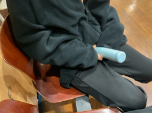

1. 장유민
-
사건사고 및 논란
-
어록
2. 임다솜
-
사건사고 및 논란
- 헐벗은 남성 사진 사건
-
어록
2023년, 상세 날짜 불명
학교에서 헐벗은 남성의 사진을 해맑은 표정으로 들고 있던 사건이다

3. 구지영
-
사건사고 및 논란
-
어록
-
2024년 12월 24일
"다솜이가 ssg의 미래인 거야? 와 존나 어두워" -
2025년 11월 5일
"너네 일지망 어디 썼어? 난 명신여고"
이예빈: 난 산곡고
"떨어질 것 같은데?"
장유민: 난 산곡고 다니고 있는데
"오래 못 다닐 것 같은데"
4. 이예빈
-
사건사고 및 논란
-
어록
- 2024년 3월 3일
이게 에반게리온이지
ㄴ"게이라고?"
5. 윤서회
-
사건사고 및 논란
- 민중의 방망이 사건
2024년 3월 7일, 자신의 고간에 텀블러를 가져다대며 '민중의 방망이' 라고 말한 사건이다.
 - 채팅방 알람 해제 사건
2025년 10월 20일, 본인이 직접 폰화면을 보내며 발각됨 -
어록
- 2024년 3월 7일
"유민이는 명예를 중시하고 체면을 차려서 항상 나를 죽이잖아" - 2024년 3월 15일
장유민: 강아지 키우고 싶다
ㄴ"내가 있잖아. 주인님... 말씀만 하세요..." -
2024년 3월 21일
장유민: 현수라는 벽이 너무 컸어
ㄴ"그렇게 커보이진 않아" -
2024년 5월 3일
나 이제 참돔이랑 돌돔 구분할 줄 알아
ㄴ"구우면 모르지?" -
2025년 4월 24일
"내가 너네가 길에서 똥을 한번 싸더라도 길에서 받아줄게"